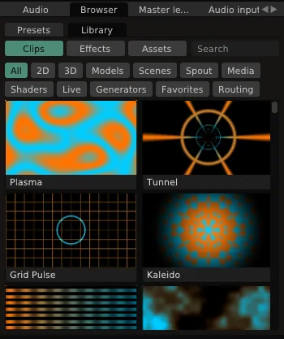

Contents
Getting started
- Welcome to NyrexVJ
- Installing and first start
- The window at a glance
- Your first show in five minutes
Playing visuals
- The clip grid
- Decks and transitions
- Layers and blending
- The Clip window
- Effects
- The Library
- Presets and sessions
- The Master window
Music and motion
Your own content
- Video and image clips
- Your own shaders
- 3D models
- The Clip Creator
- Text, particles and effect chains
- The node effect editor
- Live sources: Spout, NDI and cameras
Output and recording
Live control and shows
- Control: MIDI, OSC and the web page
- Show sync and timecode
- The show timeline
- Stage: DMX, VRSL and VRChat
- Plugins
Reference and help
Manual / Playing visuals
The Library
#Clips, effects and assets
The Library tab of the Browser has three views. Clips lists everything you can put into a cell, Effects lists everything you can put into an effect slot, and Assets shows the files your own scenes can use. The search field at the top finds items by name.


#Filtering clips
In the Clips view a row of filters narrows the list: All, 2D, 3D, Models, Scenes, Spout, Media, Shaders, Generators and Live. Clips that were added in the current version carry a small mark that disappears with the next minor version.
| Filter | What it shows |
|---|---|
| 2D | Every clip that is not a 3D clip, so generative clips, images, videos and shaders |
| 3D | Clips with real 3D content, such as the built-in meshes, models and scenes |
| Models | Your own .glb and .gltf files |
| Scenes | Scenes you made with the Clip Creator |
| Spout | The four Spout input clips |
| Media | Your images and videos |
| Shaders | Your own shader files and ISF generators |
| Generators | Text clips and particle clips, including the built-in particle clips |
| Live | NDI input and camera clips |
| Favorites | The clips you marked with a star, from all of the above |
#Using a clip
A click on a clip puts it into the selected cell and plays it. You can also drag it onto any cell, or onto a column header to put it into the selected layer of that column. A right click offers Put into the selected cell, Put into the next free cell of a layer, and for scenes Edit in the Clip Creator.
#Favorites and tags
Right click a clip and choose Add to favorites. Favorites show a small diamond in the list and are all in the Favorites filter. Edit tags opens a small window where you type a word and press Enter to add it as a tag, for example intro or red. A clip can have 8 tags of up to 24 characters, and the window lists the tags that your library already uses so you can click one instead of typing it again.
The search field understands tags: a word finds clips by name and by tag, tag:red finds only clips with that tag, and is:fav finds only favorites. You can combine them, for example is:fav tag:intro.
Favorites and tags are saved in library_meta.json in the data folder, next to your own files, and not inside presets. They belong to the name of the clip. If you rename a file, the new name starts without a star and without tags. A file that cannot be read is kept as library_meta.json.damaged and you start with an empty list.
#Replacing a clip everywhere
If you swap a video for a better version, you do not have to touch every cell. Right click the clip in the Library and choose Replace this clip everywhere, then pick the new clip. Every cell of every deck that plays the old clip then plays the new one. Layer, effect and mixing settings stay.
Tick Keep the playback settings of the cells if you want the speed, loop and start of each cell to stay as they are. The message afterwards says how many cells were changed. Undo (Ctrl+Z) takes the whole replacement back in one step.
#Files and folders
The bottom of the Library explains where your own files go and has buttons for each folder: models, media and shaders. Put the files there and press Scan again, or just drag them onto the NyrexVJ window. Create example shader writes a small shader that you can open in any text editor. The Assets view lists the models and textures that your scenes can use and the scenes you saved. Files and the data folder shows where those folders are on your computer.
Found a mistake or something missing? Tell us on GitHub. The same manual is built into the program, so you have it without internet. Open it with F1 or from the Help menu, then User manual.